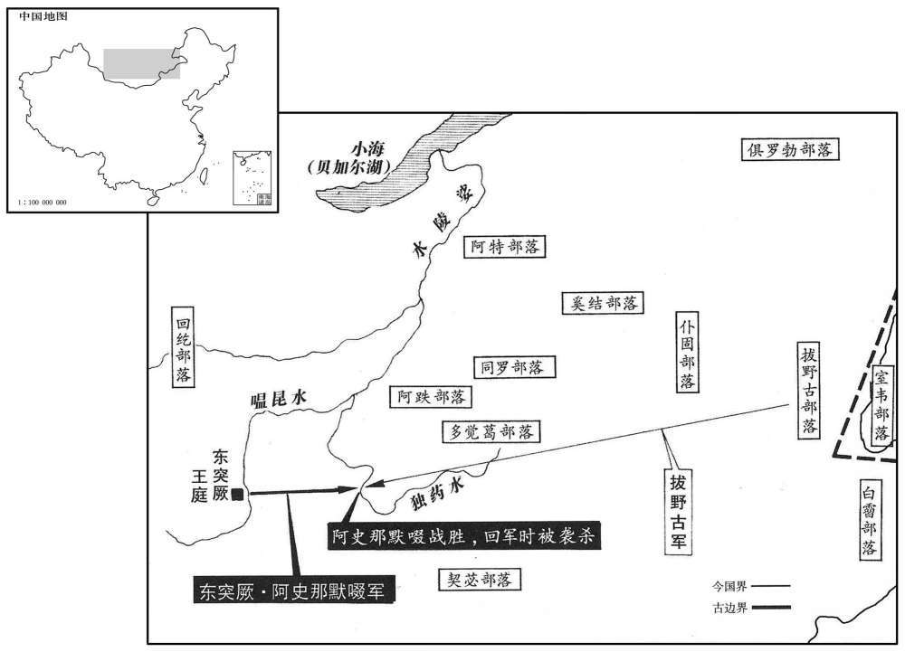

公元716年资治通鉴：本年记事、原文与白话对照
按原书编年位置阅读；追叙和史论不等于本年发生的事件。白话采用所据译本，缺译不以生成译文补齐。
卷211 · 本年记事
公元716年 · 唐玄宗至道大圣大明孝皇帝开四年
四年〔丙辰、七一六〕
上传原文的注释括号有异常，字符原样保留；无法可靠划分的段落默认全文显示。
本年事件索引（现代整理）
- 玄宗命人杖杀殴打御史大夫李杰的长孙昕
- 宋王李成器改名李宪，申王李成义改名李撝
- 卢怀慎等阻止郭虔瓘擅请给奴仆授五品官
- 两位皇子遥领北方及西域诸蕃安抚使
- 玄宗巡幸骊山温汤
- 吐蕃围攻松州
- 玄宗返回宫中
- 倪若水任汴州刺史兼河南采访使
- 松州都督孙仁献袭击城下吐蕃军获胜
- 倪若水劝玄宗停止从江南捕鸟供苑囿玩赏
- 姚崇力主捕蝗，玄宗命各州执行
- 玄宗亲试县令，二百余人落第受处分
- 杨范臣劝止玄宗派人赴海外求宝药医妇
- 唐睿宗李旦去世，玄宗拟令女儿入道追福
- 拔曳固斩杀默啜并献首，突厥五部归降
- 阙特勒杀死新立可汗，拥立兄长毗伽
- 中宗神主移出太庙，另立中宗庙
- 契丹李失活、奚李大酺率部归降
- 玄宗同意与吐蕃和谈
- 突厥部落离散，毗伽可汗召暾欲谷辅政
- 王晙建议将河曲突厥降户迁往内地
- 突厥降户叛乱，薛讷、王晙奉命镇压
- 张知运收缴降户兵器引发叛乱，战败被斩
- 暾欲谷劝毗伽暂缓南侵并反对筑城立寺
- 睿宗葬于桥陵，李杰因查赃被贬衢州
- 卢怀慎病重荐举宋璟、李杰等，去世时家无余财
- 源乾曜任黄门侍郎、同平章事
- 姚崇病居寺院，玄宗令迁入四方馆养病
- 姚崇儿子受贿，赵诲因受赂被流放
- 宋璟奉召入朝，不与权幸杨思勖交谈
- 玄宗巡幸骊山温汤后返回宫中
- 姚崇罢相，宋璟、苏颋接任
- 宋璟任相后坚持择人任职、公正刑赏
- 宋璟压低献上默啜首级的郝灵荃赏格
- 宋璟与苏颋合作辅政，苏颋常谦让
- 姚崇、宋璟相继任相，辅政有方被并称姚宋
- 罢除十道按察使
- 员外郎、御史等官不再经尚书省拟任

本年形势与背景参考图
春，正月，昕与其妹夫杨仙玉于里巷伺杰而殴之。〔伺，相吏翻。殴，乌口翻。〕杰上表自诉曰：「发肤见毁，虽则痛身，冠冕被陆，诚为辱国。」上大怒，命于朝堂杖杀，以谢百僚。〔上，时掌翻。被，皮义翻。朝，宜遥翻。〕仍以敕书慰杰曰：「昕等朕之密戚，不能训导，使陆犯衣冠，虽寘以极刑，未足谢罪。卿宜以刚肠疾恶，勿以凶人介意。」
春季，正月，长孙昕和他的妹夫杨仙玉在小巷里等候李杰将他痛打了一顿。李杰上表自诉道：“臣的头发皮肤被毁伤，只不过是受了皮肉之苦，臣的朝服衣冠受侵凌，则使国家的尊严受到了侮辱。”唐玄宗听了勃然大怒，下令在朝堂将长孙昕和杨仙玉用刑杖活活打死，以向文武臣僚谢罪。玄宗还专门降敕安慰李杰道：“长孙昕等人是朕的近亲，朕平日训导不力，致使他们敢侵犯朝廷大臣。现在虽已将他们处以极刑，恐怕仍不足以谢罪。还望您仍以刚正之心，憎恨坏人坏事，千万不要把这样的恶人放在心上。”
丁亥，宋王成器更名宪，申王成义更名撝。〔二王以成字犯昭成皇后谥号更名。更，工衡翻。〕
丁亥（初十），宋玉李成器改名为李宪，申王李成义改名为李。
乙酉，陇右节度使郭虔瓘奏，奴石良才等八人皆有战功，请除游击将军。〔唐制：游击将军五品下。〕敕下，〔下，遐嫁翻。卢怀慎等奏曰：「郭虔瓘恃其微效，辄侮彝章，为奴请五品，〔为，于伪翻。实乱纲纪，不可许。」上从之。
乙酉（初八），陇右节度使郭虔上奏，以石良才等八个奴仆均立有战功为由，请玄宗任命他们为游击将军。任命这些人为官的敕令下达后，卢怀慎等人奏道：“郭虔依仗自己的尺寸之功，动辄亵渎常法，居然要为奴仆请授五品之职，这实际上是拢乱朝廷纲纪。陛下不应答应这种要求。”唐玄宗采纳了卢怀慎等人的建议。
丙午，以鄫王嗣真为安北大都护、安抚河东．关内．陇右诸蕃大使，〔据新、旧书，此亦郯王嗣直，以为鄫王嗣真，误也。而新、旧书以安北为安西，亦误。使，疏吏翻；下同。〕以安北大都护张知运为之副。陕王嗣升为安西大都护、安抚河西四镇诸蕃大使，以安西都护郭虔瓘为之副。〔陕，失冉翻。〕二王皆不出合。诸王谣领节度自此始。
丙午（二十九日），唐玄宗任命王李嗣真为安北大都护和安抚河东、关内、陇右诸蕃大使，任命安北大都护张知运作他的副职。又任命陕王李嗣为安西大都护、安抚河西四镇诸蕃大使，任命安西都护郭虔作他的副职。王和陕王均不出朝赴任。诸王遥领节度之制即从这时开始。
二月，丙，上幸骊山温汤。
二月，丙辰（初九），唐玄宗来到骊山温泉。
吐蕃围松州。
吐蕃军队包围了松州。
丁卯，上还宫。
丁卯（二十日），唐玄宗回到宫中。
辛未，以尚书右丞倪若水为汴州刺史兼河南采访使。〔唐会要：开元二十二年二月十九日，初置十道采访处置使。据此，则先置采访使，二十二年始置采访处置使也。旧志：汴州，京师东一千三百五十里。
本段缺少可靠对应白话，原文完整保留；未使用生成译文。
癸酉，松州都督孙仁献袭击吐蕃于城下，大破之。
癸酉（二十六日），松州都督孙仁献向包围该城的吐蕃军队发动了一次出其不意的进攻，取得了重大的胜利。
上尝遣宦官诣江南取鵁鶄等，〔鵁，居肴翻。鶄，咨盈翻。鵁貭似凫而大脚、高毛冠，水鸟也。尔雅曰：鳽，鳼鶄。陆佃新义曰：鵁鶄鬬视不流，其睛交据，汧出不流，所谓鵁鶄旋目者也。尔雅翼：鳽似凫而胫高，有毛冠，江东人养之以厌火灾，又谓之交精。精，目精也；其目精交也。陆龟蒙曰：鵁鶄，黑襟，青胫，丹爪噣，色几及项。鸂，苦奚翻。鷘，耻力翻。鸂鷘，亦水鸟也，毛有五色。陆佃埤雅曰：鸂鷘五色，尾有毛如船柂，小于鸭，性食短狐，在山泽中，无复毒气。故淮赋云：「鸂鷘寻邪而逐害。」此鸟盖溪中之敕邪逐害者，故以名云。陈昭裕建州图经曰：鸂鷘于水中宿，先少若有敕令也。亦以浮游，雄者左，雌者右，群伍皆有武度。〕欲置苑中，使者所至烦扰。道过汴州，倪若水上言：「今农桑方急，而罗捕禽鸟以供园池之翫，远自江、岭，水陆传送，食以梁肉。〔传，张恋翻。食，祥吏翻。〕道路观者，岂不以陛下贱人而贵鸟乎！陛下方当以凤凰为凡鸟，麒麟为凡兽，况鵁鶄、鸂鷘，曷足贵也！」上手敕谢若水，赐帛四十段，纵散其鸟。
唐玄宗曾派遣宦官到江南捕捉、等水鸟，准备在禁苑中放养。使者所到之处，地方鸡犬不宁。在他们路过汴州时，倪若水进言道：“眼下正是农忙时节，陛下为满足园林赏玩的需要，不惜派人到处网罗捕捉飞禽。远自长江、五岭捉来，再由水陆两路传送到京，路上还要用最好的食物饲养它们。道路上的人们看到，岂不认为陛下把人看得轻贱把鸟看到贵重吗！陛下应当把凤凰当作普通的飞禽，把麒麟当作普通的走兽，何况是、这样的水鸟，又有什么可珍贵的呢！”唐玄宗亲手书写敕书向倪若水致谢，赏赐了他绢帛四十段，并下令将捉来的鸟全部放掉。
山东蝗复大起，〔复，扶又翻。〕姚崇又命捕之。倪若水谓：「蝗乃天灾，非人力所及，宜修德以禳之。〔禳，如羊翻。〕刘聪时，常捕埋之，为害益甚。」拒御史，不从其命。崇牒若水曰：「刘聪伪主，德不胜妖；今日圣朝，妖不胜德。〔妖，于乔翻。朝，直遥翻。〕古之良守，〔守，手又翻。〕蝗不入境。若其修德可免，彼岂无德致然！」若水乃不敢违。夏，五月，甲辰，敕委使者详察州县捕蝗勤惰者，各以名闻。由是连岁蝗灾，不至大饥。
山东的蝗灾又起，姚崇又下令各州组织人力捕杀蝗虫。倪若水说：“蝗虫是上天降下的灾祸，并非人力可以扭转的，朝廷应当通过修德行善来消除蝗灾。十六国时期前赵的刘聪就常捕杀埋掉蝗虫，但蝗虫所造成的灾害却反而更为严重。”于是抵制前去督促捕蝗的御史，不服从他的命令。姚崇写信给他说：“刘聪乃僭越称帝，因此德不胜邪；当今乃圣朝明君，所以邪不胜德。自古郡守贤良，蝗虫不入其境。倘若修德可以免除蝗灾，岂不等于说蝗灾是因为无德而招致的吗！”倪若水这才不敢坚持违抗捕杀蝗虫的命令。夏季，五月，甲辰（二十九日），唐玄宗颁布敕命，委派使者分赴山东受灾各州仔细考察地方官捕杀蝗虫的情况，并将勤勉者和懒惰者的姓名记录下来回奏。也正是因为这样，连年发生的蝗灾才没有引起严重的饥荒。
或言于上曰：「今岁选叙大滥，〔选，须绢翻；下典选同。〕县令非才。」及入谢，上悉召县令于宣政殿庭，〔大明宫正殿曰含元殿，其北曰宣政殿。〕试以理人策。惟鄄城令韦济词理第一，〔鄄城古县，汉属济阴郡，后汉为兖州治所，晋属濮阳郡，唐带濮州。鄄，吉掾翻。〕擢为醴泉令。〔自紧县擢为次赤县也。〕余二百余人不入第，且令之官；〔「百」当乍「十」。〕四十五人放归学问。吏部侍郎卢从愿左迁豫州刺史，李朝隐左迁滑州刺史。〔旧志：滑州法京师一千四百四十里。朝，直遥翻。考异曰：韦济传云「问安人策一道」。今从唐历。卢从愿传曰：「上尽召新授县令，一时于殿庭策试，考入下第者，一切放归学问。」唐历试在四月，从愿、朝隐贬在五月。朝隐传云：「四年春，以授县令非其人，贬。」今从唐历。又韦济传曰：「时有人密奏上曰：『今岁吏部选叙大滥，县令非才，全不简择。』及县令谢官日，引入殿庭问安人策，试者一百余人，独济策第一，或有不书纸者。擢济为醴泉令，二十余人还旧官，四十五人放归习读。」今亦从唐历。〕从愿典选六年，与朝隐皆名称职。史以从愿、朝隐为称职，则或言为非矣。称，尺证翻。〕初，高宗之世，马载、裴行俭在吏部最有名，时人称吏部前有马、裴，后有卢，李。济；嗣立之子也。〔韦嗣立，思谦之子，长安中为相。〕
有人对唐玄宗说：“今年选官太滥，所任命的县令大多数不称职。”所以等到新任命的官员入朝拜谢的时候，玄宗便召集所有的县令到宣政殿殿庭上，以如何治民为题命他们各作策文一篇。其中只有鄄城县令韦济词理最佳，玄宗特意将他提升为醴泉县令。其余有二百多人没有达到要求，暂且让他们上任；又有四五十个人被放回家中继续学习。吏部侍郎卢从愿被降职为豫州刺史，李朝隐被降职为滑州刺史。卢从愿共主持选官事务达六年之久，与李朝隐都是公认的称职官员。当初在高宗朝，马载和裴行俭二人在吏部最有名，人们都说吏部前有马、裴，后有卢、李。韦济是韦嗣立的儿子。
有胡人上言海南多珠翠奇宝，〔海南谓林邑、扶南、真腊诸国也。，时掌翻。〕可往营致，因言市舶之利；〔舶，音白。〕又欲往师子国〔师子国，天竺旁国也，居西南海中，旧无人民，止有鬼神及龙居之。诸国商贾来共市易，鬼神不见其形，但出珍宝，显其所堪价，商贾依价取之。其地和适，无冬夏之异。诸国人闻其土乐，因此竞至，或有停住者，遂成大国；能驯养师子，因以名国。〕求灵药及善医之妪，寘之官掖。〔妪，威遇翻。，掖，音亦。〕上命监察御史杨范臣与胡人偕往求之，范臣从容奏曰：「阶下前年焚珠玉、锦绣，示不复用。今所求者何以异于所焚者乎！彼市舶与商贾争利，殆非王者之体。〔从，千容翻。复，扶又翻。贾，音古。〕胡药之性，中国多不能知；况于胡妪，岂宜寘之宫！扶御史，天子耳目之宫，必有军国大事，臣虽触冒炎瘴，死不敢辞。此特胡人胘惑玄婂，无益圣德，窃恐非陛下之意，愿熟思之。」上遽自引咎，慰谕而罢之。
有个胡人进言，说海南盛产珠翠奇宝，可以派人前去采购，并且趁机大讲对外贸易的利益；还建议去师子国寻访灵丹妙药和精于医术的女子带回宫中。唐玄宗命令监察御史杨范臣跟着这位胡人一起前去访求。杨范臣不慌不忙地向玄宗奏道：“陛下前年焚毁了珠宝玉器和锦绣织物，表示再也不用这些东西。现在陛下想要的东西与前年焚毁的东西有什么区别呢！那海上贸易与商贾之人争利，恐怕与帝王的规矩不符。再说胡药的药性，我们中国人多无法了解；况且胡人的女子，哪里适合安排在皇宫之内呢！作为监察御史，乃是天子的耳目，如果真是军国大事所需，即使是赴汤蹈火，臣万死不辞。但这只是胡人扰乱视听的阿谀奉承之言，对陛下的圣德没有丝毫益处，臣担心这并非出自陛下的本意，还望陛下仔细斟酌。”唐玄宗急忙承认了自己的错误，对杨范臣好言慰问，并取消了这一命令。
六月，癸亥，上皇崩于百福殿。〔年五十五。考异曰：睿宗、玄宗实录皆曰甲子。按下云，「己巳，睿宗一七斋，度万安公主为女道士。」今从旧本纪、唐历。〕己巳，以上女万安公主为女官，欲以追福。
六月，癸亥（十九日），太上皇唐睿宗在百福殿驾崩。己巳（二十五日），唐玄宗将自己的女儿万安公主度为女道士，以便为太上皇祈求冥福。
癸酉，拔曳固斩突厥可汗默啜首来献。时默啜北击拔曳固，大破之于独乐水，〔乐，音洛。〕恃胜轻归，不复设备，遇拔曳固迸卒颉质略，自柳林突出，斩之。〔兵败溃散，士卒迸走，故曰迸卒。复，扶又翻。迸，北孟翻。〕时大武军子将郝灵荃奉使在突厥，〕子将，小将也。唐令，制每军大将一人，别奏八人，傔十六人。副二人，分掌军务，奏、傔灭大将半，判官二人，典四人。总管四人，二主左、右虞候，二主左、右押衙，傔各五人。子将八人，资其分行阵，辩金鼓及部署，傔各二人。〕颉质略以其首归之，〔考异曰：唐历作「勃曳固」，今从实录。唐历又云「灵荃引持勒回纥部落斩默啜于毒乐河」，今从旧传。旧传云「入蕃使郝灵俭」，今从唐历。又新旧纪皆云六月癸酉斩默啜，唐历亦在六月。玄宗实录，七月戊寅诏书与降附突厥云：「簌其衰弱，早就翦除，其能捉获默啜者，巳卜赏格。」盖未奏到耳。〕与偕诣阙，悬其首于广街。拔曳固、回纥、同罗、霫、仆固五部皆来降，置于大武军北。
两版字句有差异，建议核对原文。
癸酉（二十九日），拔曳固部落将突厥可汗默啜斩首，并入朝来献默啜的首级。当时默啜率兵攻打北部的拔曳固部落，在独乐水将拔曳固的部众击溃，恃胜撤军，途中未加防范，在柳林遇到突然出现的拔曳固溃兵颉质略，被颉质略斩首。这时大武军小将郝灵荃正好奉命出使突厥，颉质略便将默啜的首级交给他，两人一起到朝中，朝廷将默啜的首级悬挂在大街上示众。拔曳固、回纥、同罗、、仆固五个部族都归降唐朝，玄宗将他们统统安置在大武军以北地区。
默啜之子小可汗立，骨咄禄之子阙特勒击杀之，〔骨咄禄即骨笃禄，默啜之兄也，永淳二年反，天授二年死，默啜代立。〕及默啜诸子、亲信略尽；立其兄左贤王默棘连，是为毗伽可汗，国人谓之「小杀」。毗伽以国固让阙特勒，阙特勒不受；乃以为左贤王，专典兵马。
默啜的儿子小可汗继立，默啜之兄骨咄禄的儿子阙特勒将其击杀，默啜的其他儿子和亲信也被诛戮殆尽。阙特勒将其兄左贤王默棘连立为可汗，这就是毗伽可汗，国人都称他为“小杀”，毗伽坚决要把可汗的位置让给阙特勒，阙特勒没有接受，毗伽可汗便任命阙特勒为左贤王，专门统领突厥的军队。
秋，七月，壬辰，太常博士陈贞节、苏献以太庙七室已满，请迁中宗神主于别庙，奉睿宗神主祔太庙；从之。又奏迁昭成皇后祔睿宗室，肃明皇后留妃于仪神庙。〔肃明皇后，睿宗之元妃也。昭成后，次妃也，以生帝升祔睿宗，而肃明后祀于别庙，非礼也。仪坤庙，见上卷景云二年。〕八月，乙巳，立中宗庙于太庙之西。
秋季，七月，壬辰（十八日），太常博士陈贞节、苏献认为太庙里的七座殿都有了神主，请求将唐中宗的神主迁到另外的庙里去，奉睿宗皇帝的神主进入太庙，唐玄宗表示同意。陈贞节和苏献又上奏请求将玄宗生母昭成皇后的神主迁入太庙中睿宗的殿里受祭，而将睿宗的嫡妻肃明皇后的神主仍然留在仪坤庙受祀。八月，乙巳（初二），在太庙西面设立了中宗庙。
辛未，契丹李失活、奚李大酺帅所部来降。〔武后万岁通天时，奚、契丹叛。帝即位之后，孙佺、薛相相继丧师，两蕃一敢乘胜凭陆中国，乃相帅来降，中势安强，有以服其心故也。酺，音蒲。帅，读曰率。降，户江翻；下同。〕制以失活为松漠郡王、行左金吾大将军兼松漠都督，因其八部落莤长，拜为刺史；〔贞观末，以契丹达稽部为峭茖州，纥便部为弹汗州，独活部为无逢州，芬问部为羽陆州，突便部为日连州，芮奚部为徒河州，坠斤为万丹州，伏部为匹黎、赤山二州，并松漠府凡六部十州；今复以其莤长各为刺史。〕又以将军薛泰督军镇抚之。大酺为饶乐郡王、行右金吾大将军兼饶乐都督。失活，尽忠之从父弟也。〔李尽忠即万岁通天叛者。乐，音洛。从，才用翻。〕
辛未（二十八日），契丹族首领李失活和奚族首领李大各率部下归顺唐朝。唐玄宗颁布制命，封李失活为松漠郡王、行左金吾大将军兼松漠都督，任命他手下的八个部落酋长为刺史，又派将军薛泰督率军队安抚这一地区。李大同时受封为饶乐郡王、行右金吾大将军兼饶乐都督。李失活是李尽忠的堂弟。
吐蕃复请和；〔复，扶又翻；下禄复、多复、必复、无复同。〕上许之。
吐蕃请求两国和解，唐玄宗表示同意。
突厥默啜既死，奚、契丹拔曳固等诸部皆内附，突骑施苏禄复自立为可汗。突厥部落多离散，毗伽可汗患之，乃召默啜时牙官暾欲谷，以为谋主。暾欲谷年七十余，〔暾，乃昆翻。〕多智略，国人信服之。突厥降户处河曲者，〔北河之曲。处，昌吕翻。〕闻毗伽立，多复叛归之。
突厥可汗默啜被杀之后，奚、契丹、拔曳固等部落纷纷归附唐朝，突骑施酋长苏禄又自立为可汗。由于突厥各部落已四分五裂，毗伽可汗很是忧虑，便找来默啜可汗在位时的牙官暾欲谷，用为谋主。暾欲谷已年逾七旬，足智多谋，为突厥人所信服。被安置在河曲之地的突厥降户，听说毗伽可汗自立以后，大多又背叛朝廷，归附毗伽可汗。
并州长史王晙上言：「此属徒以其国丧乱，〔丧，息浪翻。〕故相帅来降；若彼安宁，必复叛去。今置之河曲，此属桀黠，实难制御，往往不受军州约束，兴兵剽掠；〔黠，户八翻。剽，匹妙翻。〕闻其逃者已多与虏声问往来，通传委曲。乃是畜养此属使为间谍，〔畜，吁玉翻。间，工苋翻。〕日月滋久，奸诈逾深，窥伺边隙，将成大患。虏骑南牧，必为内应，〔伺，相吏翻。骑，奇寄翻。〕来逼军州，表里受敌，虽有韩、彭，不能取胜矣。愿以秋、冬之交，大集兵众，谕以利害，给其资粮，徙之内地。二十年外，渐变旧俗，皆成劲兵；虽一时暂劳，然永久安靖。比者守边将吏及出境使人，多为谀辞，怭非事实，〔比，毗至翻。将，即亮翻。〕或云北虏破灭，或云降户妥帖，皆欲自衒其功，非能尽忠徇国。愿察斯利口，〔孔子曰：「恶利口之覆邦家者。」勿忘远虑。议者必曰：『国家向时已尝寘降户于河曲，皆获安宁，〔谓贞观时也。〕今何所疑！』此则事同时异，不可不察。向者，颉利既亡，降者无复异心，故得久安无变。今北虏尚存，〔谓默啜虽死，毗伽又立也。〕此属或畏其威，或怀其惠，或其亲属，岂乐南来！较之彼时，固不侔矣。〔彼时，谓贞观之时。乐，音洛。〕以臣愚虑，徙之内地，上也；多屯士马，大为之备，华、夷相参，人劳费广，次也；正如今曰，下也。愿审兹三策，择利而行，纵使因徙逃亡，得者皆为唐有；若留至河冰，恐必有变。」
并州长史王进言道：“这些胡人只不过是由于他们的国家丧乱才一个接一个地归降朝廷，一旦他们国内趋于安定，必将再次叛离。由于这些人凶暴狡诈，所以如果将他们安置在河曲一带，必然难以控制，他们往往不服从当地军、州等地方官府的约束，动辄举兵杀掠百姓。现在听说很多逃走的胡人与敌人频繁往来，通风报信。这等于是畜养这些胡人让他们充当间谍，时间越久，奸邪狡诈的行为会越多，万一他们窥探到边疆防务的疏漏而有所图谋，必然会带来极大的祸患。等到突厥军队南犯之时，这些人必定会成为内应，前来逼迫军州，使之内外受敌，那时就算有韩信、彭越这样的名将，也万难取胜。希望陛下能在秋冬之交，大规模集结军队，向这些人晓以利害，供给他们一些钱财和口粮，将他们迁往内地。这样的话，经过二十年以后，他们旧有的习俗风尚就会逐渐改变，并且可以变成战斗力很强的军队；虽然需要暂时付出一些辛劳，却可以换来长期的安宁。近来一些戍边将吏以及奉命出使的官员所说的大多是阿谀奉承之辞，并不符合事实，他们有的说北部胡人部落破灭殆尽，有的声称归降的人户稳定、守法，都不过是想要吹嘘自己的功劳，并非出于尽忠为国。希望陛下明察这些花言巧语，不要忘记长远的考虑。或许有些人一定会说：‘朝廷在贞观年间就曾经将归降的胡人安置在河曲之地，并且都相安无事，现在对这种作法又有什么可怀疑的呢！’事情虽然与贞观时期相同，但具体的形势却早已发生了变化，陛下对此不可不多加考虑。贞观时期颉利可汗灭亡之后，归降的胡人便不再有异心，因而局势得以长期稳定，没有非常之变发生。现在北方毗伽可汗尚存，在这些归降的胡人中间，有人害怕他的威势，有人不忘他的恩惠，有人是他的亲属，他们怎么会心甘情愿地归降朝廷呢！所以现在的形势与太宗贞观时期根本不一样。依臣愚见，将他们迁徙到内地去，乃是上策；在河曲多驻军队，严密监视防备他们，使汉人和胡人彼此安居，虽然百姓疲弊、耗资巨大，却也仍不失为中策；像现在这样将他们安置在河曲之地，乃是下策。希望陛下仔细研究这上中下三策，选择最为有利的计策去实施，纵使这些人中有人因不愿迁徙而逃亡，但服从迁徙命令的人都可以成为我大唐的子民；倘若迁延不决，拖到黄河结冰的季节，臣担心会发生非常之变。”
疏奏，未报；降户閖跌思泰、阿悉烂等果叛。冬，十月，甲辰，命朔方大总管薛讷发兵追讨之。王晙引州兵西济河，昼夜兼行，造击叛者，破之，斩获三千级。
这篇奏疏呈上之后，玄宗未作答复；归降的胡人跌思泰、阿悉烂等人果然发动了叛乱。冬季，十月，甲辰（初二），唐玄宗命令朔方道大总管薛讷调集军队追击叛逃的胡人。王也率领并州的官军西渡黄河，昼夜兼程，追击叛逃的胡人并打败了他们，共斩敌首三千级。
先是，单于副都护张知运悉收降户兵仗，〔先，悉荐翻。〕令渡河而南，降户怨怒。御史中丞姜晦为巡边使，〔使，疏吏翻。〕降户诉无弓矢，不得射猎，晦悉还之；降户得之，遂叛。张知运不设备，与之战于青刚岭，〔青刚岭在庆州方渠县北，灵州之南。〕为虏所擒，欲送突厥；至绥州境，将军郭知运以朔方兵邀击之，大破其众于黑山呼延谷，虏释张知运而去。上以张知运丧师斩之以徇。
在此之前，单于副都护张知运收缴了归降胡人的所有兵器，命令他们南渡黄河，胡人对此非常不满。御史中丞姜晦正好担任巡边使的职务，胡人便向他诉说因没有弓箭而无法狞猎，姜晦便下令将收缴的武器尽数归还他们。胡人得到了武器之后便发动了叛乱。张知运事先没有防备，与叛军在青刚岭仓猝交战，兵败被俘，叛军打算将他交给突厥。胡人行至绥州境内时，将军郭知运率领朔方军截击胡人，在黑山呼延谷大破胡人，胡人丢下张知运，仓皇而逃。唐玄宗认为张知运损兵折将，便下令将他斩首示众。
毗伽可汗既得思泰等，欲南入为寇。暾欲谷曰：「唐主英武，民和年丰，未有间隙，不可动也。〔丧，息浪翻。间，克苋翻。〕我众新集，力尚疲羸，且当息养数年，始可观变而举。毗伽又欲筑城，并立寺观，〔羸，伦为翻。寺观，古玩翻。〕暾欲谷曰：「不可。突厥人徒稀少，〔少，诗沼翻。〕不及唐家百分之一，所以能与为敌者，正以逐水草，居处无常，〔处，昌吕翻。〕射猎为业，人皆习武，强则进兵抄掠，弱则窜伏山林，唐兵虽多，无所施用。若筑城而居，变更旧俗，〔更，工衡翻。〕一朝失利，必为所灭。释、老之法，教人仁弱，非用武争胜之术，不可崇也。」毗伽乃止。
突厥毗伽可汗收编了跌思泰等人之后，便打算南侵唐朝。暾欲谷谏阻道：“当今唐朝皇帝英明勇武，百姓和睦，粮食收成也很好，尚未出现任何破绽，我们不能轻举妄动。再说我们的部众刚刚聚集到一起，国力还很衰弱，暂且需要用几年的时间休养生息，方可观察唐朝的变化，伺机举兵南进。”毗伽可汗又想修筑城池，并且还要建造佛寺道观，暾欲谷又谏阻道：“不可如此行事。突厥人口稀少，比不上唐朝的百分之一，我们之所以能够与他们抗衡，正是由于我们长年逐水草而居，没有固定的住处，部众均以射猎为职业，人人都谙习武艺，势力强了就发兵南下抢掠财物，势力弱了就逃窜到山林之中，所以唐兵虽多，却无用武之地。倘若我们变更固有的习俗，筑城而居，那么万一作战失利，整个国家就会被唐朝灭亡。况且佛道教义，都教人们仁慈柔弱，而非要人们以武力争夺胜利，因此不能尊崇它们。”毗伽于是打消了这些念头。
唐午，葬大圣皇帝于桥陆，〔桥陆在同州蒲城县三十里。昃岁改蒲城县为奉先县，属京兆尹。〕庙号睿宗。御史大夫李杰护桥陆作，判官王旭犯赃，杰按之，反为所构，左迁衢州刺史。〔衢州，汉新安、太末之地，晋改新安为信安，改太末为龙丘，属东阳郡，唐武德四年分置衢州。衢州，京师东南四千七百十二里。
本段缺少可靠对应白话，原文完整保留；未使用生成译文。
十一月，己卯，黄门监卢怀慎疾亟，上表荐宋璟、李杰、李朝隐、卢从愿并明时重器，所坐者小，所弃者大，望垂矜录；上深纳之。乙未，薨。〔考异曰：郑处诲明皇杂录云：「怀慎为黄门监、吏部尚书，尺病既久，宋璟、卢从愿相与访焉。怀慎常器重二人，持二人手谓曰：『公出入为藩辅，主上求治甚切，然享国岁久，近者稍倦于勤，必有人乘此而进矣，君其志之。』按怀慎初为史部时，环贬睦州；及卒，璟犹未归。从愿未尝入相。又四年未为享国岁久。今不取。〕家无余蓄，惟一老苍头，请自鬻以办丧事。〔史言卢怀慎之奴异乎人奴。〕
十一月，己卯（初七），黄门监卢怀慎病情危急，向玄宗上表推荐宋、李杰、李朝隐、卢从愿四人，称赞他们都是太平盛世不可多得的杰出人才，认为他们所犯的过错小，贬黜他们，使朝廷受到的损失大，恳求玄宗对他们给予爱惜和重用。唐玄宗很同意这一建议并予以采纳。乙未（二十三日），卢怀慎去世，家中没有任何余财，只有一位老仆人，请求将自己卖掉换钱为他办丧事。
丙申，以尚书左丞源干曜为黄门侍郎、同平章事。
丙申（二十四日），唐玄宗任命尚书左丞源乾曜为黄门侍郎、同平章事。
姚崇无居第，寓居罔极寺，以病痁谒告，〔唐会要，神龙元年，太平公主为天后立罔极寺于大宁坊，开元二十年改为兴唐寺。痁，失廉翻，疟疾也。〕上遣使问今食起居状，日数十辈。〔使，疏吏翻。〕源干曜奏事或称旨，上辄曰：「此必姚崇之谋也。」或不称旨，辄曰：「何不与姚崇议之！」〔称，尺证翻。〕干曜常谢实然。每有大事，上常令干曜就寺问崇问。癸卯，干曜请迁崇于四方馆，〔四方馆属中书省。〕仍听家人入侍疾；上许之。崇以四方馆有簿书，非病者所宜处，固辞。上曰：「设四方馆，为官吏也；使卿居之，为社稷也。〔处，昌吕翻。为，于伪翻。〕恨不可使卿居禁中耳，此何足辞！」
姚崇自己没有住宅，寓居在罔极寺中，因身患疟疾向玄宗请假，玄宗屡次派使者询问他的日常饮食起居状况，每日竟达数十次之多。源乾曜上奏言事时，每当他的回答符合玄宗的旨意，玄宗总是说：“这一定是姚崇的主意。”如果有时的回答不符合玄宗的旨意，玄宗就说：“你为什么不事先与姚崇商量一下呢！”源乾曜也常常向玄宗道歉，承认确实是如此。朝中一有大事，玄宗就要让源乾曜到罔极寺询问姚崇的意见。癸卯（疑误），源乾曜请求将姚崇从罔极寺搬到四方馆居住，并准许他的家属入馆照料他的病，玄宗答应了这个要求。姚崇认为四方馆内存有官署的文书，不是病人应当居住的地方，因此坚决推辞。唐玄宗对他说：“设置四方馆本来就是为官员服务的；朕安排您住进来，是为国家考虑。朕恨不得让您住到宫里，您还有什么可推辞的呢！”
崇子光禄少卿彝、宗正少卿异，广通宾客，颇受馈遗，为时所讥。〔遗，不季翻。〕主书赵诲为崇所亲信，〔唐中书省主书四人，从七品上。〕受古人赂，事觉，上亲鞫问，下狱尚当，崇复营收，〔下，遐稼翻。复，扶又翻。〕上由是不悦。会曲赦京城，敕特标诲名，杖之一百，流岭南。〔考异曰：朝野佥载：「紫微舍人倪若水赃至八百贯，因诸王内宴，姚元崇讽之曰：『倪舍人正直，百司嫉之，欲成事，何不为上言之！』诸王入，众共救之，遂释，一无所问。主书赵诲受蕃饷一刀子，或直六七百；元崇宜敕处死。后有降，崇乃伩曰：『别敕处死者，决一百配流。』大理决赵诲一百不死，夜，遣给使缢杀之。」「伩」盖「批」字也。今从旧传。〕崇田是忧惧，数请相位，〔收，所角翻。〕荐广州都督宋璟自代。
姚崇的两个儿子光禄少卿姚彝和宗正少卿姚异，平日广交宾客，收受了许多礼物，受到当时人们的非议。主书赵诲受到姚崇的亲近信任，他接受胡人的贿赂被发觉，玄宗亲自审讯，罪当处以死刑，姚崇出面营救，唐玄宗因此不高兴。恰巧赶上因特殊情况赦免京城的在押罪犯，唐玄宗在赦免敕书中专门标出赵诲的名字，另处以杖刑一百，并流放岭南。姚崇因此而感到担心和恐惧，便屡次请求辞去宰相职务，推荐广州都督宋代替自己为相。
十二月，上将幸东都，以璟为刑部尚书、西京留守，〔璟，俱永翻。守，式又翻。〕令驰驿诣阙，遣内侍、将军杨思勖迎之。〔按旧书杨思勖传，时为内常侍、右监门卫将军。内侍，内侍省官之长，内常侍则为之贰者也。内侍，从四品下；内常侍，正五品上。〕璟风度凝远，人草测其际，在涂竟不与思勖交言。思勖素贵幸，归，诉于上，上嗟叹良久，益重璟。
十二月，唐玄宗将要到东都洛阳，任命宋为刑部尚书、西京留守，他日夜兼程赶赴京城，并派内侍、将军杨思勖前去迎接。宋风度凝重深沉，令人难测，在赴京途中居然没有与杨思勖交谈。杨思勖一向深得玄宗宠幸，回京后便向玄宗诉说，唐玄宗慨叹了好长时间，越发敬重宋。
丙辰，上幸骊山温汤；乙丑，还宫。
丙辰（十四日），唐玄宗来到骊山温泉；乙丑（二十三日），唐玄宗回到宫中。
闰月，己亥，姚崇罢为开府仪同三司，源干曜罢为京兆耳、西京留守，〔守，手又翻。〕以刑部尚书宋璟守吏部尚书兼黄门监，紫微侍郎苏颋同平章事。〔颋，他鼎翻。〕
闰十二月，己亥（二十八日），姚崇被罢免为开府仪同三司；源乾曜被罢免为京兆尹、西京留守。唐玄宗任命刑部尚书宋守吏部尚书兼黄门监，还任命紫微侍郎苏为同平章事。
璟为相，务在择人，随材授任，使百官各称其职；〔称，尺证翻。〕刑赏无私，敢犯颜直谏。上其敬惮之，虽不合意，亦曲从之。
宋作宰相，致力于选拔人才，根据才能的不同授予相应的官职，使文武百官人人称职；宋行赏施罚不徇私情，对皇帝也敢于犯颜直谏。玄宗对他也十分敬畏，有时他奏对不合己意，玄宗也往往曲意听从。
突厥默啜自则天世为中国患，朝廷肝食，〔朝，直遥翻。旰，古按翻。〕倾天下之力不能克；郝灵荃得其首，自谓不世之功。璟以天子好武功，恐好事者竞生心徼幸，〔好，呼到翻。徼，工尧翻。〕痛抑其赏，逾年始授郎将；灵荃恸哭而死。〔郝灵荃因人以为功，授以郎将，非抑之也。将，即亮翻。〕
突厥可汗默啜自武则天时期开始，就对唐朝构成极大威胁，朝廷为此废寝忘食，用尽了全国的人力物力，却始终不能制服他；所以大武军小将郝灵荃得到了默啜的首级，便自认为立下了盖世奇功。宋认为天子好武功，担心好事之徒存侥幸之心刻意邀功，便极力阻抑对郝灵荃的封赏，事过一年才给了他一个郎将的官，郝灵荃极度伤心，痛哭而死。
璟与苏颋相得甚厚，颋遇事多让于璟，璟每论事则颋为之助，璟尝谓人曰：「吾与苏氏父子皆同居相府，仆射宽厚，诚为国器，〔仆射，谓苏緕也。〕然献可替否，吏事精敏，则黄门过其父矣。」〔按旧书苏颋传，颋以紫微侍郎同紫微黄门平章事。〕
宋与苏相处得很好，苏遇事多谦让宋，宋每提出什么意见，苏也尽力襄助。宋曾对人说：“我与苏父子都一起担任过宰相，苏仆射为人宽厚，实在是国家不可多得的人才，但在对朝政提出建议以及处理政务的精敏程度方面，苏则超过他的父亲。”
姚、宋相继为相，崇善应变成务，璟善守法持正；二人志操不同，然协心辅佐，使赋役宽平，刑罚清省，百姓富庶。唐世贤相，前称房、杜，后称姚、宋，他人莫得比焉。二人每进见，上辄为之起，去则临轩送之。〔见，贤遍翻。辄为，于伪翻。〕及李林甫为相，虽宠任过于姚、宋，然礼遇殊卑薄矣。〔史终言之。〕紫微舍人高仲舒博通典籍，齐澣练习时务，姚、宋每坐二人以质所疑；既而叹曰：「欲知古，问高君，欲知今，问齐君，可以无阙政矣。」
姚崇和宋相继为相，姚崇擅长随机应变以圆满地完成任务，宋则擅长遵守成法坚持正道；两个人的志向操守不同，却能同心协力辅佐玄宗，使得这个时期赋役宽平，刑罚清省，百姓富庶。在唐一代的贤相中，前有贞观朝的房玄龄和杜如晦，后有开元朝的姚崇和宋，其他的人，则无法与此四人相提并论。姚崇与宋进见时，唐玄宗常常要站起来迎接，他们离开时，唐玄宗便要在殿前相送。等到李林甫作宰相时，虽然受到的宠信超过了姚崇和宋，但得到的礼遇就太微薄了。这一时期的紫微舍人高仲舒博通典籍，齐浣则通达时务，姚崇和宋每有疑难问题，都要向高仲舒和齐浣征求意见，得到满意的答复之后感叹道：“想了解往古之制，可以向高君请教，想知道当今之事，可以向齐君请教，这样，处理政事就不会出现差错了！”
辛丑，罢十道按察使。〔开元二年复置按察使。〕
辛丑（三十日），唐玄宗下诏废除十道按察使。
旧制，六品以下官皆委尚书省奏拟，是岁，始制员外郎、御史、起居、遗、补不拟。〔员外郎、御史、起居、遗、补，皆台省要官，由人主亲除，不由尚书奏拟。按唐制，员外郎从六品，侍御史、起居郎亦从六品，补阙七品，拾遗及监察御史则八品耳。
本段缺少可靠对应白话，原文完整保留；未使用生成译文。
译本中未与胡注本可靠对应的内容
以下另列供核对版本差异，不并入胡注本正文。
译本所附古文
[8]辛未，以尚书右丞倪若水为汴州刺史兼河南采访使。
译本白话
辛未（二十四日），唐玄宗任命尚书右丞倪若水为汴州刺史兼河南采访使。
上虽欲重都督、刺史，选京官才望者为之，然当时士大夫犹轻外任。扬州采访使班景倩入为大理少卿，过大梁，若水饯之行，立望其行尘，久之乃返，谓宫属曰：“班生此行，何异登仙！”
唐玄宗虽想重视都督、刺史，选拔有才能名望的京官担任这些职务，但当时的士大夫却还是轻视地方官。扬州采访使班景倩入朝任大理寺少卿，途中经过大梁，倪若水为他饯行，分手后站在原地遥望他的车马所扬起的尘土，许久之后才返回衙门，并对他属下的官员们说：“班生此次入朝为官，真是无异于登仙哪！”
译本所附古文
[20]庚午，葬大圣皇帝于桥陵，庙号睿宗。御史大夫李杰护桥陵作，判官王旭犯赃，杰按之，反为所构，左迁衢州刺史。
译本白话
庚午（二十八日），将大圣皇帝安葬在桥陵，庙号为睿宗。御史大夫李杰总领桥陵的修建工程，判官王旭贪污工程费用，李杰审查他，反为王旭所诬陷，被玄宗降职为衢州刺史。
译本所附古文
[26]旧制，六品以下官皆委尚书省奏拟，是岁，始制员外郎、御史、起居、遗、补不拟。
译本白话
朝廷旧制规定：六品以下职事官的任命，均由尚书省拟出具体意见上奏皇帝，从这一年开始，玄宗下令将六品以下职事官中的员外郎、御史、起居郎、拾遗、补阙的任命改由皇帝亲自负责，不再由尚书省奏拟。